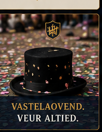
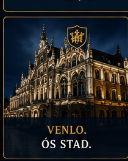
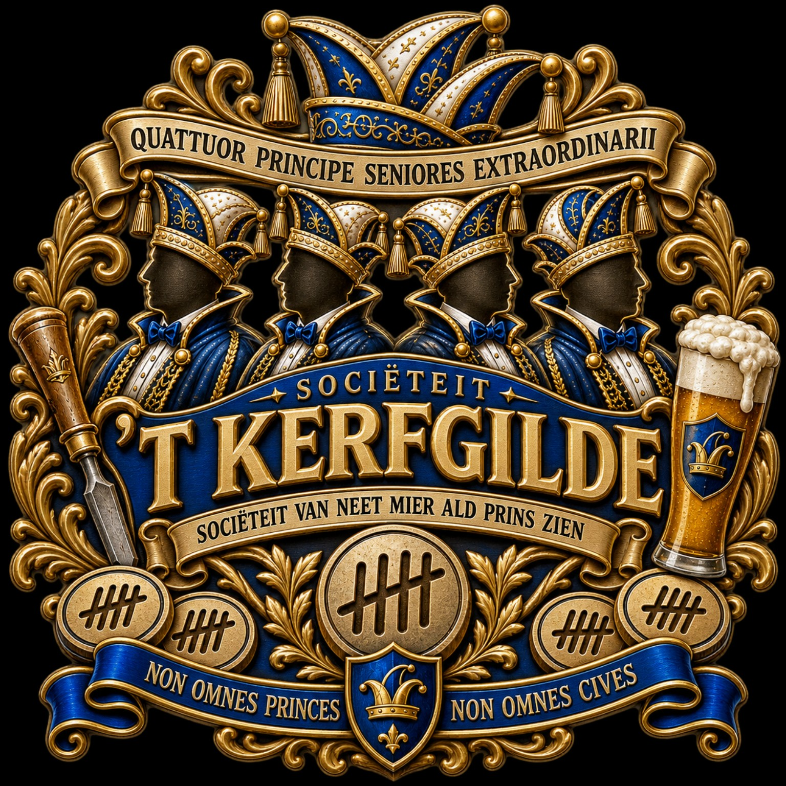
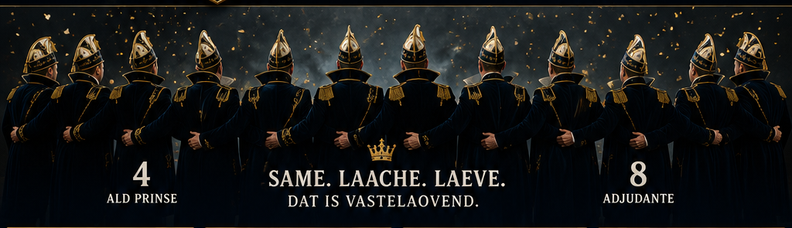

Venlo als decor
De stad, haar verhalen en haar karakter vormen de achtergrond van wat wij samen maken.

Neet te kaup. Neet veur idderein. En zeker neet te kopiëre.
Sommige minse hebbe unne titel. Weej hebbe unne kerf. Sociëteit ’t Kerfgilde is een Venlose sociëteit met een eigen karakter, eigen tradities en vooral een sterk gevoel voor vriendschap, humor en verbondenheid.
Een besloten gezelschap waar sterke verhalen, humor, vriendschap en nieuwe tradities samenkomen.
Wae? Ald-hoeëgwaerdigheidsbekleiders die tiedes dae schoeëne Venlose Vastelaovend veurop zien meuge gaon.

De stad, haar verhalen en haar karakter vormen de achtergrond van wat wij samen maken.

Een moderne sociëteit met ruimte voor rituelen, vriendschap, humor en tradities die vanzelf ontstaan.
Want uiteindelijk draait het om de mensen die aan tafel zitten.

’T NIEJE GOLD VAN VENLO.
’T KERFGILDE · Sociëteit van neet mier ald Prins zien.